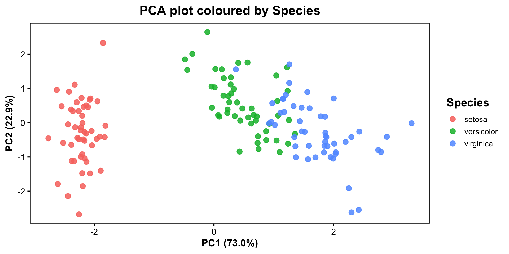
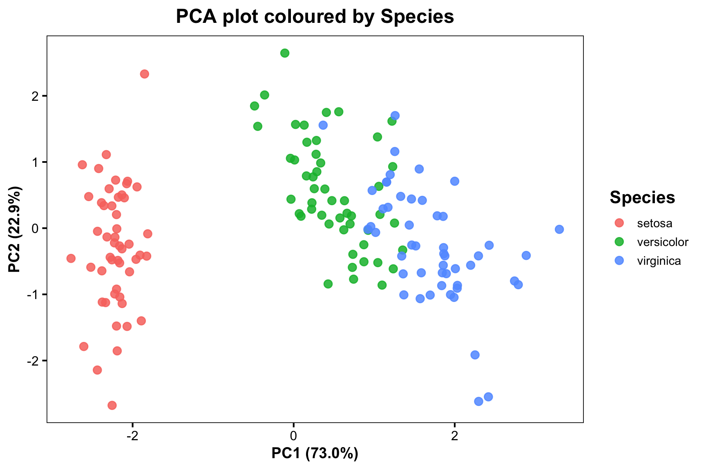
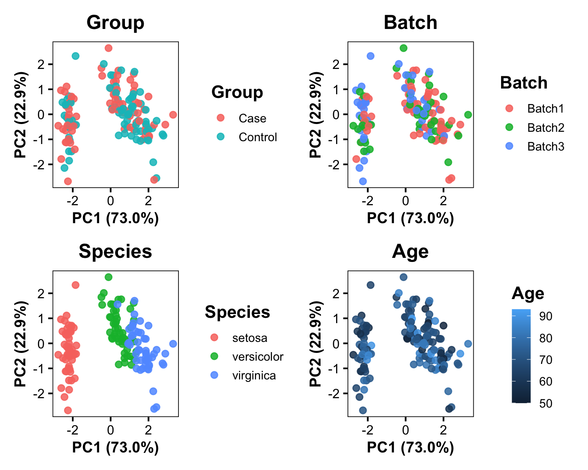
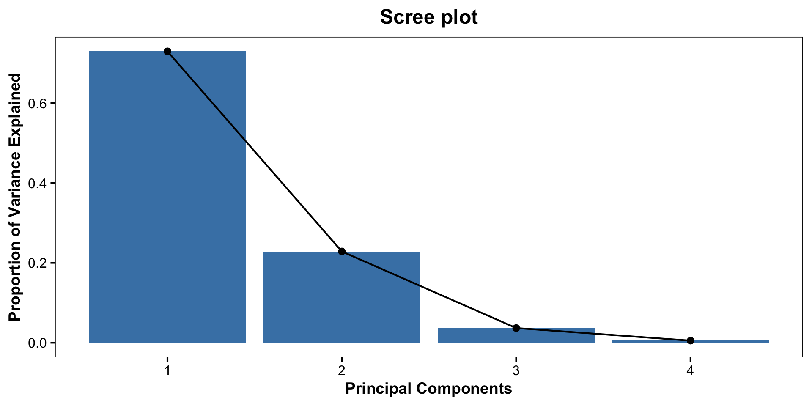
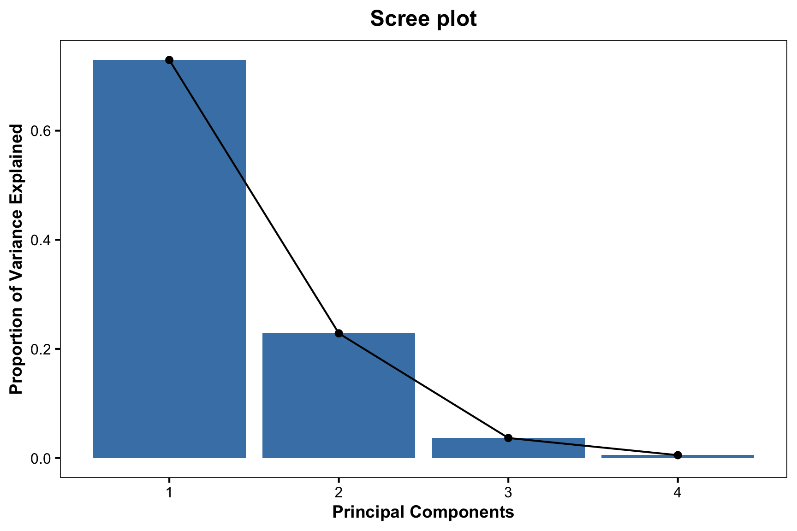

Quarto enables you to weave together content and executable code into a finished presentation. To learn more about Quarto presentations see https://quarto.org/docs/presentations/.
Here I’ll add some examples/essentials for analysis in R.
Principal Component Analysis (PCA) is used to:
- Reduce dimensionality
- Explore structure in data
- Identify patterns (e.g. batch effects, groups)
PC1 explains the largest amount of variation in the dataset.PC2 explains the next largest amount of variation, while being independent of PC1.PC1 and PC2.data("iris")
# Create extra metadata
set.seed(123)
iris$Group <- sample(c("Case", "Control"), nrow(iris), replace = TRUE)
iris$Batch <- sample(c("Batch1", "Batch2", "Batch3"), nrow(iris), replace = TRUE)
iris$Age <- round(rnorm(nrow(iris), mean = 70, sd = 10))
str(iris)'data.frame': 150 obs. of 8 variables:
$ Sepal.Length: num 5.1 4.9 4.7 4.6 5 5.4 4.6 5 4.4 4.9 ...
$ Sepal.Width : num 3.5 3 3.2 3.1 3.6 3.9 3.4 3.4 2.9 3.1 ...
$ Petal.Length: num 1.4 1.4 1.3 1.5 1.4 1.7 1.4 1.5 1.4 1.5 ...
$ Petal.Width : num 0.2 0.2 0.2 0.2 0.2 0.4 0.3 0.2 0.2 0.1 ...
$ Species : Factor w/ 3 levels "setosa","versicolor",..: 1 1 1 1 1 1 1 1 1 1 ...
$ Group : chr "Case" "Case" "Case" "Control" ...
$ Batch : chr "Batch3" "Batch2" "Batch3" "Batch1" ...
$ Age : num 70 91 63 59 70 73 74 65 59 83 ...# PCA needs only numeric columns, so we subset those
pca_input <- iris[, c("Sepal.Length", "Sepal.Width", "Petal.Length", "Petal.Width")]
pca_result <- prcomp(pca_input, scale. = TRUE)
variance_explained <- summary(pca_result)$importance[2, ] * 100
pc1_label <- sprintf("PC1 (%.1f%%)", variance_explained[1])
pc2_label <- sprintf("PC2 (%.1f%%)", variance_explained[2])
summary(pca_result)Importance of components:
PC1 PC2 PC3 PC4
Standard deviation 1.7084 0.9560 0.38309 0.14393
Proportion of Variance 0.7296 0.2285 0.03669 0.00518
Cumulative Proportion 0.7296 0.9581 0.99482 1.00000pca_plot_theme <- theme_classic(base_size = 16) +
theme(
plot.title = element_text(face = "bold", size = 18, hjust = 0.5),
axis.title = element_text(face = "bold", size = 14),
axis.text = element_text(size = 12, colour = "black"),
legend.title = element_text(face = "bold"),
legend.text = element_text(size = 11),
legend.position = "right",
panel.border = element_rect(colour = "black", fill = NA, linewidth = 0.6),
plot.background = element_rect(fill = "white", colour = NA),
panel.background = element_rect(fill = "white", colour = NA),
axis.line = element_blank()
)Important
Metadata must match the same samples used in the PCA. If these don’t match after filtering or NA handling, the colours will break.
# Introduce some missing values
pca_input_na <- pca_input
pca_input_na[1:10, 1] <- NA
# Remove rows with NA
clean_data <- na.omit(pca_input_na)
nrow(pca_input_na)[1] 150[1] 140Note
If rows are removed from the PCA input, the metadata must be filtered in the same way before colouring the PCA plot.


p1 <- ggplot(pca_df, aes(PC1, PC2, colour = Group)) +
geom_point(size = 2.4, alpha = 0.85) +
labs(title = "Group", x = pc1_label, y = pc2_label, colour = "Group") +
pca_plot_theme
p2 <- ggplot(pca_df, aes(PC1, PC2, colour = Batch)) +
geom_point(size = 2.4, alpha = 0.85) +
labs(title = "Batch", x = pc1_label, y = pc2_label, colour = "Batch") +
pca_plot_theme
p3 <- ggplot(pca_df, aes(PC1, PC2, colour = Species)) +
geom_point(size = 2.4, alpha = 0.85) +
labs(title = "Species", x = pc1_label, y = pc2_label, colour = "Species") +
pca_plot_theme
p4 <- ggplot(pca_df, aes(PC1, PC2, colour = Age)) +
geom_point(size = 2.4, alpha = 0.85) +
labs(title = "Age", x = pc1_label, y = pc2_label, colour = "Age") +
pca_plot_theme
p1 + p2 + p3 + p4


Tip
When loading pca_input there are several options depending on the type of file you are loading, for example .csv, .xlsx, or .tsv.
One package that can be very useful when setting up an analysis is the here package (https://here.r-lib.org/). This package enables easy file referencing.
Analysis examples | PRdSR